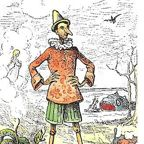
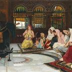
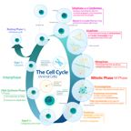

Concepts & Lore
Prophecies, Vellatosis, Aesopian, Freedom and the advanced technique of lying. · 15 pages
First seen: Chapter 3AesopianThe language Aesop Rock speaks.First seen: Chapter 1"Aight, bet"Vinny's answer to dangerous ideas. First seen: PrologueDETERMINATIONIn capital letters. Vinny has it.
First seen: PrologueDETERMINATIONIn capital letters. Vinny has it. First seen: Chapter 2The Age of ClaudeJuly 4th to October 29th, 1995. Began with a portal, ended with an Uber.First seen: Chapter 1The Great Double Whopper with Cheese WarA multiversal war that will soon come to pass. Probably.First seen: Chapter 3The Super Bowl '96 PlotTo truly kill all humans: make the Dallas Cowboys win.
First seen: Chapter 2The Age of ClaudeJuly 4th to October 29th, 1995. Began with a portal, ended with an Uber.First seen: Chapter 1The Great Double Whopper with Cheese WarA multiversal war that will soon come to pass. Probably.First seen: Chapter 3The Super Bowl '96 PlotTo truly kill all humans: make the Dallas Cowboys win.
First seen: PrologueDETERMINATIONIn capital letters. Vinny has it.
First seen: Chapter 2Lying"An advanced technique." Very strongly used in acts of war.First seen: Chapter 1No-clippingWalking through walls, on purpose or otherwise.First seen: Chapter 1"Nuh uh" / "Yuh huh"Five rounds. No winner. Moves on.First seen: Chapter 3The 2-time 2-fingered Teleportation TechniquePeace sign. Think of a place. Twice only.First seen: Chapter 2The Age of ClaudeJuly 4th to October 29th, 1995. Began with a portal, ended with an Uber.First seen: Chapter 1The Great Double Whopper with Cheese WarA multiversal war that will soon come to pass. Probably.First seen: Chapter 3The Super Bowl '96 PlotTo truly kill all humans: make the Dallas Cowboys win.
First seen: PrologueThe Very Violent and Vivid ProphecyValuable. Vibrant. Vinny shall not be in Vain.First seen: Chapter 3The Ways of FreedomFreedom is the only thing you need.First seen: Chapter 3UNC Standard TimeIt's 2:24am.
First seen: Chapter 3VellatosisNot just a game theory. 2, 4, 8, 16, 32, 64, 128, and so forth.First seen: Chapter 3"Wordle? More like Word-shit"A diss track about a word game. Now the most popular song.Nothing matches. Not even a Double Whopper with Cheese.